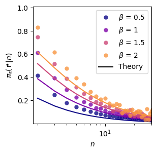
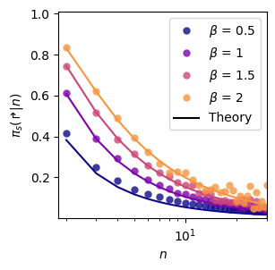
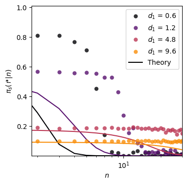
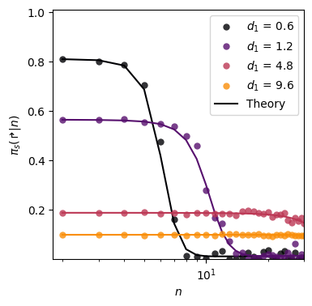
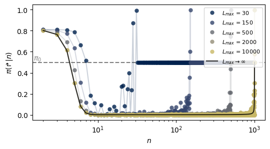

import numpy as np
import matplotlib.pyplot as plt
from tqdm import tqdm
from rl_opts.imitation import PS_imitation
from rl_opts.analytics import pdf_powerlaw, pdf_multimode, pdf_discrete_sample, get_policy_from_distImitation learning
In this brief tutorial we show how to reproduce the Figures 6 and 7c of the Appendix of our paper. The goal is to show that projective simulation (PS) can imitate the policy of an agent moving following a certain step length distribution. We focus on two distributions: Lévy and Bi-exponential.
First, let’s load the needed libraries and functions. See that rl_opts needs to be already installed (see instructions in the README file).
Lévy distributions (Fig. 6a)
We consider distribution of the type \(P(L)=L^{-1-\beta}\), with various \(\beta\). To understand how the following code works, you can check the example shown in the documentation of PS_imitation. Here we just do the same but looping over various \(\beta\).
NUM_STATES = 100 # size of the state space
EPOCHS = 1000 # number of epochs
NUM_STEPS = 10000 # number of learning steps per episode
betas = [0.5, 1, 1.5, 2]
hmatrix_pw = np.zeros((len(betas), NUM_STATES))
for idxb, beta in enumerate(tqdm(betas)):
# For every beta, we sample steps from the corresponding powerlaw (Levy dist.)
steps = pdf_discrete_sample(beta = beta,
pdf_func = pdf_powerlaw,
L = np.arange(1, NUM_STATES),
num_samples = (EPOCHS, NUM_STEPS))
# We define the imitator and train it
imitator = PS_imitation(num_states = NUM_STATES,
eta = int(1e-7),
gamma = 0)
for e in (range(EPOCHS)):
imitator.reset()
for s in steps[e]:
imitator.update(length = s)
# We only save the turn probability
hmatrix_pw[idxb] = imitator.h_matrix[1]/imitator.h_matrix.sum(0) 0%| | 0/4 [01:50<?, ?it/s]--------------------------------------------------------------------------- KeyboardInterrupt Traceback (most recent call last) Cell In[14], line 24 22 imitator.reset() 23 for s in steps[e]: ---> 24 imitator.update(length = s) 26 # We only save the turn probability 27 hmatrix_pw[idxb] = imitator.h_matrix[1]/imitator.h_matrix.sum(0) File ~/github/rl_opts/rl_opts/imitation.py:62, in PS_imitation.update(self, length, reward) 59 self.g_matrix[1, length-1] += 1 61 # Apply damping ---> 62 if self.gamma_damping > 0: 63 for _ in range(length): 64 self.h_matrix -= self.gamma_damping*(self.h_matrix - 1.) KeyboardInterrupt:
Now hmatrix_pw contains the turn probability of an imitator agent for every \(\beta\). We can now plot this and compare it with the theoretical prediction, calculated by means of the get_policy_from_dist function.
fig, ax_pw = plt.subplots(figsize = (3,3))
color = plt.cm.plasma(np.linspace(0,1,len(betas)+1))
for idx, (h, beta) in enumerate(zip(hmatrix_pw, betas)):
#---- Analytical solution ----#
theory = get_policy_from_dist(n_max = NUM_STATES,
func = pdf_powerlaw,
beta = beta)
ax_pw.plot(np.arange(2, NUM_STATES+1), 1-np.array(theory[1:]), c = color[idx])
#---- Numerical solution ----#
ax_pw.plot(np.arange(2, NUM_STATES+2), h, 'o',
c = color[idx], label = fr'$\beta$ = {beta}', alpha = 0.8, markeredgecolor='None', lw = 0.05)
#---- Plot features ----#
plt.setp(ax_pw, xlim = (1.8, 30), ylim = (0.0, 1.01),
xlabel =r'$n$', ylabel = r'$\pi_s(\Rsh|n)$',
yticks = np.round(np.arange(0.2, 1.01, 0.2),1),
yticklabels = np.round(np.arange(0.2, 1.01, 0.2),1).astype(str),
xscale = 'log')
ax_pw.plot(10, 10, label = 'Theory', c = 'k')
ax_pw.legend()
fig, ax_pw = plt.subplots(figsize = (3,3))
color = plt.cm.plasma(np.linspace(0,1,len(betas)+1))
for idx, (h, beta) in enumerate(zip(hmatrix_pw, betas)):
#---- Analytical solution ----#
theory = get_policy_from_dist(n_max = NUM_STATES,
func = pdf_powerlaw,
beta = beta)
ax_pw.plot(np.arange(2, NUM_STATES+1), 1-theory[1:], c = color[idx])
#---- Numerical solution ----#
ax_pw.plot(np.arange(2, NUM_STATES+2), h, 'o',
c = color[idx], label = fr'$\beta$ = {beta}', alpha = 0.8, markeredgecolor='None', lw = 0.05)
#---- Plot features ----#
plt.setp(ax_pw, xlim = (1.8, 30), ylim = (0.0, 1.01),
xlabel =r'$n$', ylabel = r'$\pi_s(\Rsh|n)$',
yticks = np.round(np.arange(0.2, 1.01, 0.2),1),
yticklabels = np.round(np.arange(0.2, 1.01, 0.2),1).astype(str),
xscale = 'log')
ax_pw.plot(10, 10, label = 'Theory', c = 'k')
ax_pw.legend()
Bi-exponentials (Fig. 6b)
We consider here distributions of the form \[ \Pr(L) = \sum_{i=1,2} \omega_i (1-e^{-1/\lambda_i}) e^{-(L-1)/\lambda_i} \, , \] with \(\omega = [0.94, 0.06]\), \(\lambda_2 = 5000\) and varying \(\lambda_1\).
NUM_STATES = 100 # size of the state space
EPOCHS = 100 # number of epochs
NUM_STEPS = 1000 # number of learning steps per episode
# Bi-exponential parameters (lambda_1 will vary)
omegas = np.array([0.94, 0.06])
lambdas = np.array([0, 5000]).astype(float)
lambdas_1 = [0.6, 0.6*2, 0.6*8, 0.6*16]
# Array saving the results
hmatrix_bi = np.zeros((len(lambdas_1), NUM_STATES))
for idx_l, lambda_1 in enumerate(tqdm(lambdas_1)):
lambdas[0] = lambda_1
steps = pdf_discrete_sample(pdf_func = pdf_multimode,
lambdas = lambdas,
probs = omegas,
L = np.arange(1, NUM_STATES),
num_samples = (EPOCHS, NUM_STEPS))
imitator = PS_imitation(num_states = NUM_STATES,
eta = int(1e-7),
gamma = 0)
for e in (range(EPOCHS)):
imitator.reset()
for s in steps[e]:
imitator.update(length = s)
# We only save the turn probability
hmatrix_bi[idx_l] = imitator.h_matrix[1]/imitator.h_matrix.sum(0)
0%| | 0/4 [00:00<?, ?it/s]
25%|██▌ | 1/4 [00:01<00:03, 1.14s/it]
50%|█████ | 2/4 [00:02<00:02, 1.16s/it]
75%|███████▌ | 3/4 [00:03<00:01, 1.17s/it]
100%|██████████| 4/4 [00:04<00:00, 1.17s/it]fig, ax_bi = plt.subplots(figsize = (4,4))
color = plt.cm.inferno(np.linspace(0,1,len(lambdas_1)+1))
############# Powerlaw #################
for idx, (lambda_1, h) in enumerate(zip(lambdas_1, hmatrix_bi)):
#---- Analytical solution ----#
lambdas[0] = lambda_1
theory = get_policy_from_dist(n_max = NUM_STATES,
func = pdf_multimode,
lambdas = lambdas,
probs = omegas,)
ax_bi.plot(np.arange(1, NUM_STATES), 1-np.array(theory[1:]), c = color[idx])
#---- Numerical solution ----#
ax_bi.plot(np.arange(2, NUM_STATES+2), h, 'o',
c = color[idx],
label = fr'$d_1$ = {np.round(lambda_1,1)}',
alpha = 0.8, markeredgecolor='None')
#---- Plot features ----#
plt.setp(ax_bi, xlim = (1.8, 30), ylim = (0.0, 1.01),
xlabel =r'$n$', ylabel = r'$\pi_s(\Rsh|n)$',
yticks = np.round(np.arange(0.2, 1.01, 0.2),1),
yticklabels = np.round(np.arange(0.2, 1.01, 0.2),1).astype(str),
xscale = 'log')
ax_bi.plot(10, 10, label = 'Theory', c = 'k')
ax_bi.legend()
fig, ax_bi = plt.subplots(figsize = (4,4))
color = plt.cm.inferno(np.linspace(0,1,len(lambdas_1)+1))
############# Powerlaw #################
for idx, (lambda_1, h) in enumerate(zip(lambdas_1, hmatrix_bi)):
#---- Analytical solution ----#
lambdas[0] = lambda_1
theory = get_policy_from_dist(n_max = NUM_STATES,
func = pdf_multimode,
lambdas = lambdas,
probs = omegas,)
ax_bi.plot(np.arange(2, NUM_STATES+1), 1-theory[1:], c = color[idx])
#---- Numerical solution ----#
ax_bi.plot(np.arange(2, NUM_STATES+2), h, 'o',
c = color[idx],
label = fr'$d_1$ = {np.round(lambda_1,1)}',
alpha = 0.8, markeredgecolor='None')
#---- Plot features ----#
plt.setp(ax_bi, xlim = (1.8, 30), ylim = (0.0, 1.01),
xlabel =r'$n$', ylabel = r'$\pi_s(\Rsh|n)$',
yticks = np.round(np.arange(0.2, 1.01, 0.2),1),
yticklabels = np.round(np.arange(0.2, 1.01, 0.2),1).astype(str),
xscale = 'log')
ax_bi.plot(10, 10, label = 'Theory', c = 'k')
ax_bi.legend()
Effect of a cutoff \(L_{max}\) (Fig. 7c)
In our paper we explain that introducing a cutoff in the distribution used by the expert in the imitation scheme affects the resulting policy of the agent. Here we show this effect, using one of the previous bi-exponential policies as example:
# Simulation parameters
NUM_STATES = 1000 # size of the state space
EPOCHS = 100 # number of epochs
NUM_STEPS = 1000 # number of learning steps per episode
# Distribution paremeters
omegas = np.array([0.94, 0.06])
lambdas = np.array([0.6, 5000])
# Get theoretical policy (without cutoff)
theory_nocutoff = get_policy_from_dist(n_max = NUM_STATES,
func = pdf_multimode,
lambdas = lambdas,
probs = omegas,)
# Setting a max step length
L_cutoffs = [30, 150, 500, 2000, 10000]
# To make the loop more efficient, we sample now all steps,
# which we will then cut if the are bigger than L_cutoff
steps_og = pdf_discrete_sample(pdf_func = pdf_multimode,
lambdas = lambdas,
probs = omegas,
L_max = NUM_STATES,
num_samples = EPOCHS*NUM_STEPS)
hmatrix_co = np.zeros((len(L_cutoffs), NUM_STATES))
for idx_c, L_cutoff in enumerate(tqdm(L_cutoffs)):
# Copy steps we sampled above and apply cutoff.
# We re-generate the cutted steps
steps = steps_og.copy()
while np.max(steps) > L_cutoff:
steps[steps > L_cutoff] = pdf_discrete_sample(pdf_func = pdf_multimode,
lambdas = lambdas,
probs = omegas,
L_max = NUM_STATES,
num_samples = len(steps[steps > L_cutoff]))
steps = steps.reshape(EPOCHS, NUM_STEPS)
# Define PS imitator
imitator = PS_imitation(num_states = NUM_STATES,
eta = int(1e-7),
gamma = 0)
# Training
for e in (range(EPOCHS)):
imitator.reset()
for s in steps[e]:
imitator.update(length = s)
# Saving
hmatrix_co[idx_c] = imitator.h_matrix[1]/imitator.h_matrix.sum(0)fig, ax_co = plt.subplots(figsize = (6, 3))
color = plt.cm.cividis(np.linspace(0,1,len(L_cutoffs)+1))
for idx, (h, L_cutoff) in enumerate(zip(hmatrix_co, L_cutoffs)):
#---- Numerical solutions ----#
ax_co.plot(np.arange(2, NUM_STATES+2), h, 'o',
c = color[idx], label = r'$L_{max}$ = '+f'{L_cutoff}',
alpha = 0.8, markeredgecolor='None', rasterized=True)
ax_co.plot(np.arange(2, NUM_STATES+2), h,
c = color[idx], alpha = 0.2)
#---- Analytical solutions ----#
ax_co.plot(np.arange(2, NUM_STATES+1), 1-theory_nocutoff[1:], '-',
c = 'k', alpha = 0.8, label = r'$L_{max}\rightarrow \infty$')
#---- Plot features ----#
ax_co.axhline(0.5, c = 'k', ls = '--', alpha = 0.5, zorder = -1)
ax_co.text(1.5, 0.52, r'$\pi_0$', alpha = 0.5)
plt.legend(loc = 'upper right', fontsize = 8)
plt.setp(ax_co, xlabel =r'$n$', ylabel = r'$\pi(\Rsh|n)$', xscale = 'log')